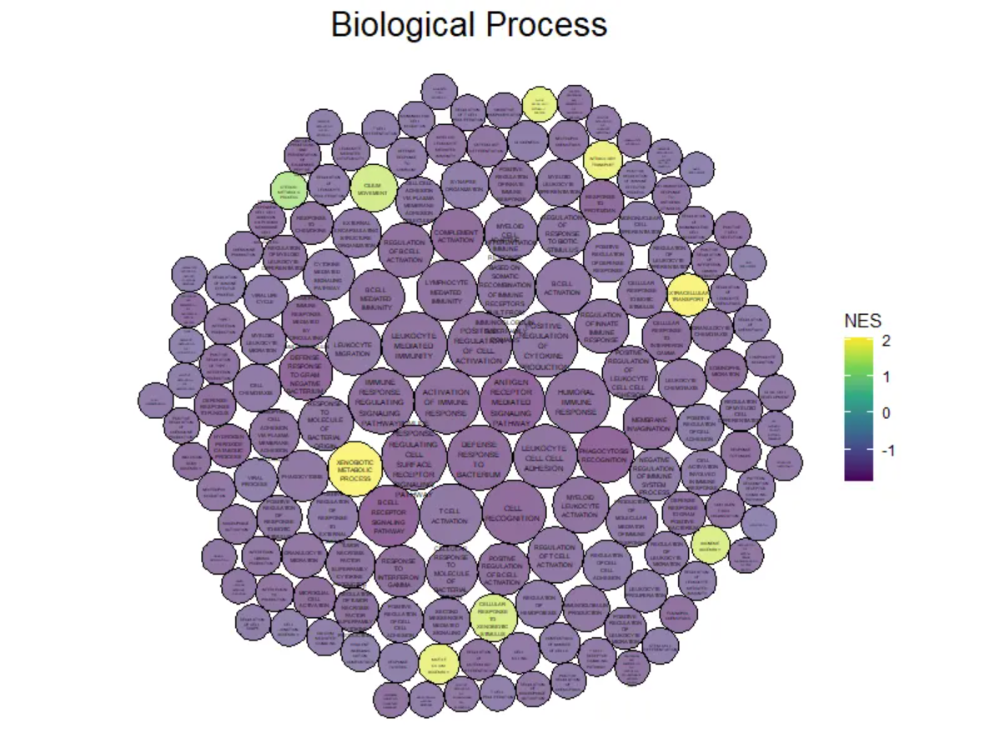
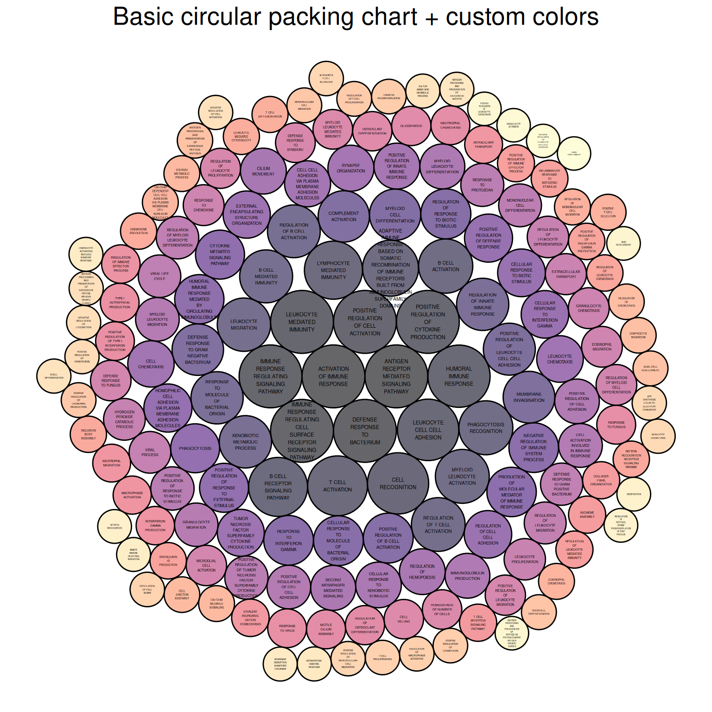
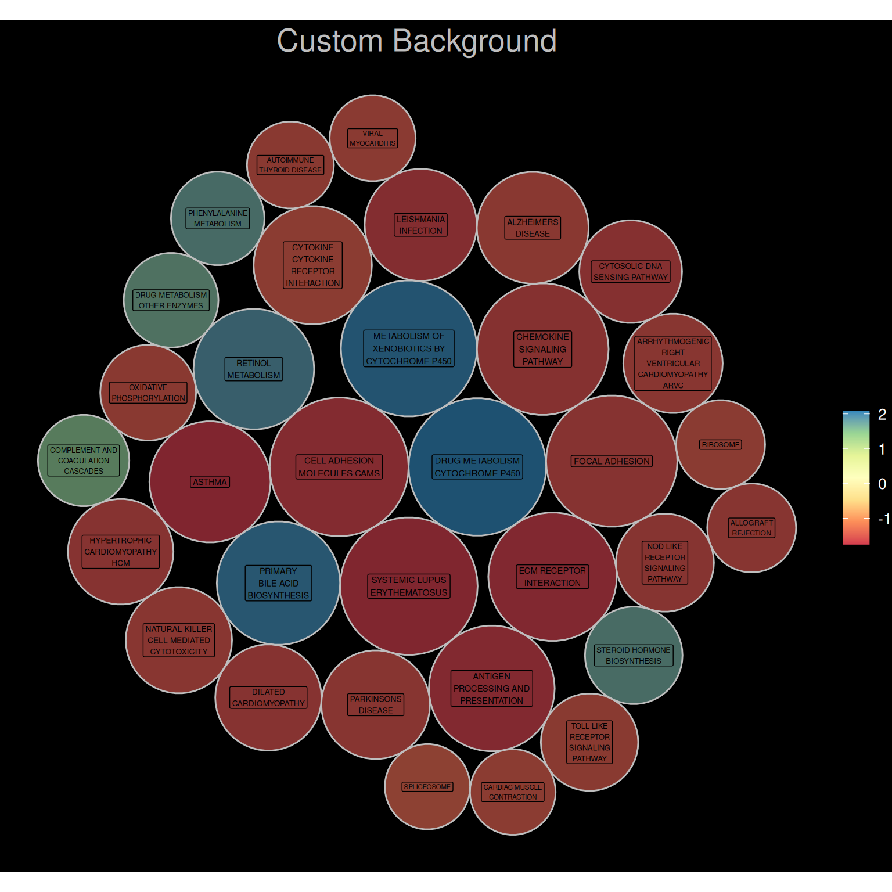
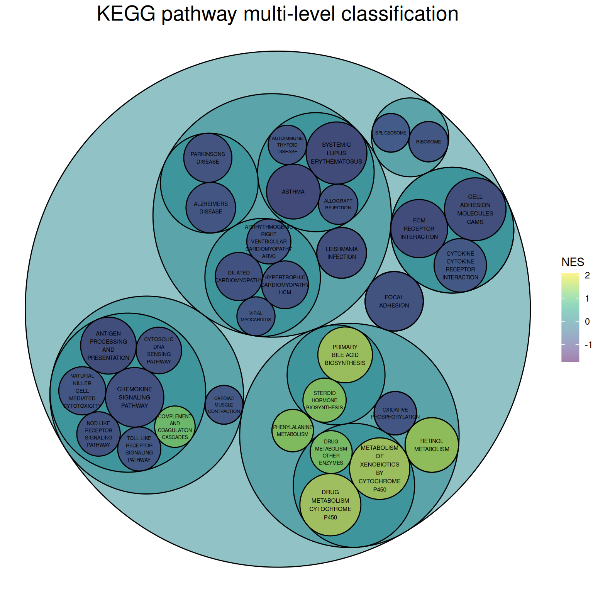
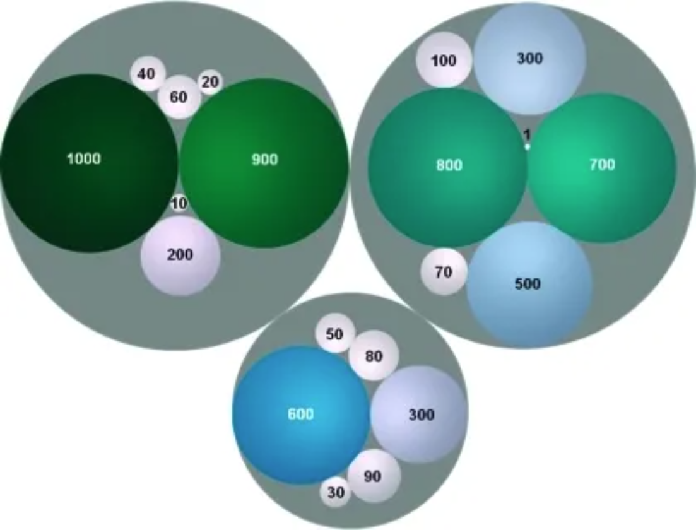

# Install packages
if (!requireNamespace("packcircles", quietly = TRUE)) {
install.packages("packcircles")
}
if (!requireNamespace("ggplot2", quietly = TRUE)) {
install.packages("ggplot2")
}
if (!requireNamespace("dplyr", quietly = TRUE)) {
install.packages("dplyr")
}
if (!requireNamespace("viridis", quietly = TRUE)) {
install.packages("viridis")
}
if (!requireNamespace("ggiraph", quietly = TRUE)) {
install.packages("ggiraph")
}
if (!requireNamespace("htmlwidgets", quietly = TRUE)) {
install.packages("htmlwidgets")
}
if (!requireNamespace("ggraph", quietly = TRUE)) {
install.packages("ggraph")
}
if (!requireNamespace("igraph", quietly = TRUE)) {
install.packages("igraph")
}
if (!requireNamespace("tidyverse", quietly = TRUE)) {
install.packages("tidyverse")
}
if (!requireNamespace("flare", quietly = TRUE)) {
install.packages("flare")
}
if (!requireNamespace("cowplot", quietly = TRUE)) {
install.packages("cowplot")
}
if (!requireNamespace("circlepackeR", quietly = TRUE)) {
remotes::install_github("jeromefroe/circlepackeR")
}
if (!requireNamespace("data.tree", quietly = TRUE)) {
install.packages("data.tree")
}
# Load packages
library(packcircles)
library(ggplot2)
library(dplyr)
library(tidyr)
library(viridis)
library(ggiraph)
library(htmlwidgets)
library(ggraph)
library(igraph)
library(tidyverse)
library(flare)
library(cowplot)
library(circlepackeR)
library(data.tree)Circular Packing Chart
Circular Packing can be viewed as a special type of classification tree diagram, which is particularly suitable for displaying classification data with hierarchical relationships.
Example

Setup
System Requirements: Cross-platform (Linux/MacOS/Windows)
Programming Language: R
Dependencies:
packcircles;ggplot2;dplyr;tidyr;viridis;ggiraph;ggiraph;htmlwidgets;ggraph;igraph;tidyverse;flare;cowplot;circlepackeR;data.tree
Data Preparation
#GO BP
data_BP <- readr::read_csv("https://bizard-1301043367.cos.ap-guangzhou.myqcloud.com/data_BP.csv")
#flare
data_edges <- flare$edges
data_vertices <- flare$vertices
#KEGG
data_KEGG <- readr::read_csv("https://bizard-1301043367.cos.ap-guangzhou.myqcloud.com/data_KEGG.csv")
#KEGG_type
data_KEGG_type <- readr::read_csv("https://bizard-1301043367.cos.ap-guangzhou.myqcloud.com/data_KEGG_type.csv")
data_KEGG_type$pvalue_log <- -log10(data_KEGG_type$pvalue)
summary(data_KEGG_type) PW ID pvalue NES
Length:33 Length:33 Min. :3.490e-06 Min. :-1.7497
Class :character Class :character 1st Qu.:4.930e-05 1st Qu.:-1.5834
Mode :character Mode :character Median :6.342e-04 Median :-1.5103
Mean :2.093e-03 Mean :-0.7439
3rd Qu.:2.889e-03 3rd Qu.:-1.3939
Max. :8.710e-03 Max. : 2.0829
type subtype pvalue_log
Length:33 Length:33 Min. :2.060
Class :character Class :character 1st Qu.:2.539
Mode :character Mode :character Median :3.198
Mean :3.442
3rd Qu.:4.307
Max. :5.457 data_KEGG_type1 <- data_KEGG_type %>%
dplyr::select(type, subtype, PW, pvalue_log, NES) %>%
arrange(type, subtype)Visualization
1. Single-level Circular Packing Chart
1.1 Basic Circular Packing Chart
The GO analysis results of differentially expressed genes in mouse lung tissue before and after cisplatin administration are used as an example.
## color
data_BP1 <- data_BP
data_BP1$pvalue_log <- -log10(data_BP1$pvalue)
packing_BP <- circleProgressiveLayout(data_BP1$pvalue_log, sizetype='area' )
# Merging plotting data
data_BUBBLE_BP <- cbind(data_BP1, packing_BP)
# Generate the coordinates of each vertex of the circle, where npoint is the number of vertices.
dat.gg_BP <- circleLayoutVertices(packing_BP, npoints=50)
# plot
p <- ggplot() +
geom_polygon(data = dat.gg_BP,
aes(x, y, group = id, fill=as.factor(id)),
colour = "black", alpha = 0.6) +
scale_fill_manual(values = magma(nrow(data_BUBBLE_BP))) + # change color
geom_text(data = data_BUBBLE_BP,
aes(x, y, size=pvalue_log, label = str_wrap(BP,width = 10)),
show.legend = FALSE) +
scale_size_continuous(range = c(0.5,1.5)) +
theme_void() +
theme(legend.position="none",
plot.title = element_text(hjust=0.5,size = 20)) +
coord_equal() +
ggtitle("Basic circular packing chart + custom colors")
p
The figure above shows the Biological Process portion of the differential gene GO analysis of mouse lung tissue before and after cisplatin administration, with colors representing different biological processes.
1.2 Color mapping data size
The GO analysis results of differentially expressed genes in mouse lung tissue before and after cisplatin administration are used as an example.
# Basic Circular Packing Chart (ggplot2) ----
# plot ----
# Returns the position and size of each bubble.
data_BP1 <- data_BP
data_BP1$pvalue_log <- -log10(data_BP1$pvalue)
packing_BP <- circleProgressiveLayout(data_BP1$pvalue_log, sizetype='area' )
# Merging plotting data
data_BUBBLE_BP <- cbind(data_BP1, packing_BP)
# Generate the coordinates of each vertex of the circle, where npoint is the number of vertices.
dat.gg_BP <- circleLayoutVertices(packing_BP, npoints=50)
# value maps to NES value
dat.gg_BP$NES <- rep(data_BP1$NES, each=51)
# plot
ggplot() +
geom_polygon(data = dat.gg_BP, aes(x, y, group = id, fill=NES), # Color indicates NES value.
colour = "black", alpha = 0.6) +
scale_fill_continuous(type = "viridis")+
# Add labels + control size
geom_text(data = data_BUBBLE_BP,
aes(x, y, size=pvalue_log, label = str_wrap(BP,width = 10)),
show.legend = FALSE) +
scale_size_continuous(range = c(0.5,1.5)) +
# theme
theme_void() +
theme(plot.title = element_text(hjust=0.5,size = 20)) +
coord_equal()+
ggtitle("Biological Process")
The figure above shows the Biological Process portion of the differential gene GO analysis in mouse lung tissue before and after cisplatin administration. The size of the circle represents the negative value of log10(P), with larger circles indicating more reliable results. The circle color represents the NES value.
1.3 Custom Background
The KNGG pathway analysis results corresponding to differentially expressed genes in mouse lung tissue before and after cisplatin administration are used as an example.
## Custom Background
# Color mapping data values
data_KEGG1 <- data_KEGG
data_KEGG1$pvalue_log <- -log10(data_KEGG1$pvalue)
packing_KEGG <- circleProgressiveLayout(data_KEGG1$pvalue_log, sizetype='area' )
# Merging plotting data
data_BUBBLE_KEGG <- cbind(data_KEGG1, packing_KEGG)
# Generate the coordinates of each vertex of the circle, where npoint is the number of vertices.
dat.gg_KEGG <- circleLayoutVertices(packing_KEGG, npoints=50)
# value maps to NES value
dat.gg_KEGG$NES <- rep(data_KEGG1$NES, each=51)
p3 <- ggplot() +
geom_polygon(data = dat.gg_KEGG, aes(x, y, group = id, fill=NES),
colour = "grey", alpha = 0.6, size=.5) +
scale_fill_distiller(palette = "Spectral", direction = 1 ) +
# Add labels + control size
geom_label(data = data_BUBBLE_KEGG,
aes(x, y, size=pvalue_log, label = str_wrap(PW,width = 15)),
show.legend = FALSE) +
scale_size_continuous(range = c(1.5,2)) +
# Theme, Custom
theme_void() +
theme(
legend.text = element_text(colour="white", size = 10),
plot.background = element_rect(fill="black"),
plot.title = element_text(color="grey", hjust=0.5,size = 20)
) +
coord_equal() +
ggtitle("Custom Background")
p3
2. Interactive Single-level Circular Packing Chart
The ggiraph package allows us to draw interactive circular packing chart.
# Interaction----
# Color mapping data values
data_KEGG1 <- data_KEGG
data_KEGG1$pvalue_log <- -log10(data_KEGG1$pvalue)
packing_KEGG <- circleProgressiveLayout(data_KEGG1$pvalue_log, sizetype='area' )
# Merging plotting data
data_BUBBLE_KEGG <- cbind(data_KEGG1, packing_KEGG)
# Generate the coordinates of each vertex of the circle, where npoint is the number of vertices.
dat.gg_KEGG <- circleLayoutVertices(packing_KEGG, npoints=50)
# value maps to NES value
dat.gg_KEGG$NES <- rep(data_KEGG1$NES, each=51)
data_BUBBLE_KEGG$text <- paste("Pathway:",data_BUBBLE_KEGG$PW,
"\n", "-log10(P):", data_BUBBLE_KEGG$pvalue_log,
"\n","NES:", data_BUBBLE_KEGG$NES)
p5 <- ggplot() +
geom_polygon_interactive(data = dat.gg_KEGG,
aes(x, y, group = id, fill=NES, tooltip = data_BUBBLE_KEGG$text[id], data_id = id),
colour = "black", alpha = 0.6) +
scale_fill_distiller(palette = "BuPu", direction = 1 ) +
# Add labels + control size
geom_text(data = data_BUBBLE_KEGG,
aes(x, y, size=pvalue_log, label = str_wrap(PW,width = 15)),
show.legend = FALSE) +
scale_size_continuous(range = c(1.5,2)) +
# theme
theme_void() +
theme(plot.title = element_text(hjust=0.5,size = 20)) +
coord_equal()+
ggtitle("Interactive graphics")
P_inter <- girafe(ggobj = p5, width_svg = 7, height_svg = 7)
P_interInteractive Single-level Circular Packing Chart
The image above is an interactive single-level circular packing chart. The circle where the mouse hovers is orange, allowing users to interactively view the pathway name, the -log10 value of the P-value, and the NES value. A download function is also provided.
3. Multi-level circular packing chart
This example uses KNGG pathway analysis data supplemented with pathway classification.
Drawing multi-level circular packing chart requires organizing the data into a vertex dataset and an edge dataset. The graph_from_data_frame() function in the igraph package can effectively create an igraph graph from one or two data frames containing a list of edges and edge/vertex attributes for plotting.
# Point dataset
rstat_nodes_KEGG <- data.frame(name = c("KEGG Pathways",
unique(data_KEGG_type1$type),
unique(data_KEGG_type1$subtype),
unique(data_KEGG_type1$PW)),
pvalue_log = c(rep(0,22),data_KEGG_type1$pvalue_log),
NES = c(rep(0,22),data_KEGG_type1$NES),
label = c("KEGG Pathways",
unique(data_KEGG_type1$type),
unique(data_KEGG_type1$subtype),
unique(data_KEGG_type1$PW)))
# Start creating the edge dataset
edges1 <- rep("KEGG Pathways", length(unique(data_KEGG_type1$type)))
# Create functions for batch processing
fcount1 <- function(n){
data1 <- filter(data_KEGG_type1, data_KEGG_type1$type == unique(data_KEGG_type1$type)[n])
count <- length(unique(data1$subtype))
result <- rep(unique(data_KEGG_type1$type)[n], count)
return(result)
}
edges2<- NULL
for(i in seq(1, 6)){
edges2 <- c(edges2,fcount1(i))
#print(edges2)
}
# Create functions for batch processing
fcount2 <- function(n){
data1 <- filter(data_KEGG_type1, data_KEGG_type1$subtype == unique(data_KEGG_type1$subtype)[n])
count <- length(unique(data1$PW))
result <- rep(unique(data_KEGG_type1$subtype)[n], count)
return(result)
}
edges3<- NULL
for(i in seq(1,15)){
edges3 <- c(edges3,fcount2(i))
#print(edges3)
}
edgesa <- unique(data_KEGG_type1$type)
# Create functions for batch processing
fcounta <- function(n){
data1 <- filter(data_KEGG_type1, data_KEGG_type1$type == unique(data_KEGG_type1$type)[n])
result <- unique(data1$subtype)
return(result)
}
edgesb<- NULL
for(i in seq(1, 6)){
edgesb <- c(edgesb,fcounta(i))
#print(edgesb)
}
# Create functions for batch processing
fcountb <- function(n){
data1 <- filter(data_KEGG_type1, data_KEGG_type1$subtype == unique(data_KEGG_type1$subtype)[n])
result <- unique(data1$PW)
return(result)
}
edgesc<- NULL
for(i in seq(1, 15)){
edgesc <- c(edgesc,fcountb(i))
#print(edgesc)
}
# edges dataset
rstat_edges_KEGG <- data.frame(from = c(edges1, edges2, edges3),
to = c(edgesa, edgesb, edgesc))
# Creating igraph graphs
mygraph_KEGG <- graph_from_data_frame( rstat_edges_KEGG, vertices=rstat_nodes_KEGG )
# plot
ggraph(mygraph_KEGG, layout = 'circlepack', weight = pvalue_log ) + # The size of the bubble corresponds to the value of the value.
geom_node_circle(aes(fill = NES)) +
theme_void()+
geom_node_text( aes(filter=leaf, size=pvalue_log,
label = str_wrap(label,width = 10)),
show.legend = FALSE) +
scale_size_continuous(range = c(1.5,2)) +
scale_fill_viridis(alpha = 0.5) +
ggtitle("KEGG pathway multi-level classification") +
theme(plot.title = element_text(color="black", hjust=0.5,size = 20))
The image above is a circular packing chart of multi-level classification of the KEGG pathway. The size of the smallest circle represents the negative value of log10(P), and the larger the circle, the greater the correlation. The circle color represents the NES value.
The classification is based on the distribution channels on the KEGG official website:
Primary classifications: Metabolism, Genetic Information Processing, Environmental Information Processing, Cellular Processes, Organic Systems, Human Diseases, Drug Development
Secondary classifications: For example, the five secondary classifications under Cellular Processes are: Transport and catabolism, Cell growth and death, Cellular community (eukaryotes), Cellular community (eukaryotes), and Cell motility.
4. Interactive multi-level circular packing chart
The circlepackeR package allows for the creation of interactive multi-level circular packing chart.
# Group border display
# Multi-level data
data <- data.frame(
root=rep("root", 15),
group=c(rep("group A",5), rep("group B",5), rep("group C",5)),
subgroup= rep(letters[1:5], each=3),
subsubgroup=rep(letters[1:3], 5),
value=sample(seq(1:15), 15)
)
# Change data format
data$pathString <- paste("world", data$group, data$subgroup, data$subsubgroup, sep = "/")
population <- as.Node(data)
p_inter1 <- circlepackeR(population,
size = "value",
color_min = "hsl(56,80%,80%)",
color_max = "hsl(341,30%,40%)")
p_inter1Interactive multi-level circular packing chart
The image above is an interactive multi-level circular packing chart, which allows for displaying group borders and zooming in and out of different group levels.
Taking the flare dataset as an example.
# All levels of border display
data_edge <- flare$edges
data_edge$from <- gsub(".*\\.","",data_edge$from)
data_edge$to <- gsub(".*\\.","",data_edge$to)
#head(data_edge) # This is an edge list
data_tree <- FromDataFrameNetwork(data_edge)
data_nested <- ToDataFrameTree(data_tree,
level1 = function(x) x$path[2],
level2 = function(x) x$path[3],
level3 = function(x) x$path[4],
level4 = function(x) x$path[5])[-1,-1]
data_nested <- na.omit(data_nested)
# plot
data_nested$pathString <- paste("roots", data_nested$level1, data_nested$level2, data_nested$level3, data_nested$level4, sep = "/")
data_nested$value=1
data_Node <- as.Node(data_nested)
p_inter2 <- circlepackeR(data_Node, size = "value")
p_inter2Taking the flare dataset as an example
The image above is an interactive multi-level circular packing chart, which allows for the display of all borders and the zooming in and out of different level groups.
Applications

Colored circles represent the spatial framework of medicinal chemistry and are labeled with the frequencies of their frameworks. The area and color of the circles are related to the framework frequencies. Frameworks in the same cluster are grouped into gray circles. [1]
Reference
[1] Langdon SR, Brown N, Blagg J. Scaffold diversity of exemplified medicinal chemistry space. J Chem Inf Model. 2011 Sep 26;51(9):2174-85. doi: 10.1021/ci2001428. Epub 2011 Aug 31. PMID: 21877753; PMCID: PMC3180201.
[2] Bedward M, Eppstein D, Menzel P (2023). packcircles: Circle Packing. R package version 0.3.6, https://CRAN.R-project.org/package=packcircles.
[3] H. Wickham. ggplot2: Elegant Graphics for Data Analysis. Springer-Verlag New York, 2016.
[4] Wickham H, François R, Henry L, Müller K, Vaughan D (2023). dplyr: A Grammar of Data Manipulation. R package version 1.1.4, https://CRAN.R-project.org/package=dplyr.
[5] Wickham H, Vaughan D, Girlich M (2024). tidyr: Tidy Messy Data. R package version 1.3.1, https://CRAN.R-project.org/package=tidyr.
[6] Simon Garnier, Noam Ross, Robert Rudis, Antônio P. Camargo, Marco Sciaini, and Cédric Scherer (2024). viridis(Lite) - Colorblind-Friendly Color Maps for R. viridis package version 0.6.5.
[7] Gohel D, Skintzos P (2024). ggiraph: Make ‘ggplot2’ Graphics Interactive. R package version 0.8.10, https://CRAN.R-project.org/package=ggiraph.
[8] Vaidyanathan R, Xie Y, Allaire J, Cheng J, Sievert C, Russell K (2023). htmlwidgets: HTML Widgets for R. R package version 1.6.4, https://CRAN.R-project.org/package=htmlwidgets.
[9] Pedersen T (2024). ggraph: An Implementation of Grammar of Graphics for Graphs and Networks. R package version 2.2.1, https://CRAN.R-project.org/package=ggraph.
[10] Wickham H, Averick M, Bryan J, Chang W, McGowan LD, François R, Grolemund G, Hayes A, Henry L, Hester J, Kuhn M, Pedersen TL, Miller E, Bache SM, Müller K, Ooms J, Robinson D, Seidel DP, Spinu V, Takahashi K, Vaughan D, Wilke C, Woo K, Yutani H (2019). “Welcome to the tidyverse.” Journal of Open Source Software, 4(43), 1686. doi:10.21105/joss.01686 https://doi.org/10.21105/joss.01686.
[11] Li X, Zhao T, Wang L, Yuan X, Liu H (2022). flare: Family of Lasso Regression. R package version 1.7.0.1, https://CRAN.R-project.org/package=flare.
[12] Wilke C (2024). cowplot: Streamlined Plot Theme and Plot Annotations for ‘ggplot2’. package version 1.1.3, https://CRAN.R-project.org/package=cowplot.
[13] Bostock M, Froelich J (2015). circlepackeR: htmlwidget for Mike Bostock d3.js circle packing visualization. R package version 0.0.0.9000.
[14] Glur C (2023). data.tree: General Purpose Hierarchical Data Structure. R package version 1.1.0, https://CRAN.R-project.org/package=data.tree.